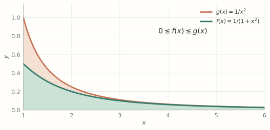

MA1508 Calculus · Chapter 5 · Section 5.10
Improper Integrals
Define infinite tails and singular integrals through limits, and test convergence before evaluation.
Stewart, Single Variable Calculus: Concepts and Contexts, 4th edition, §5.10, starting on printed p. 413.
What makes an integral improper?
A proper Riemann integral on a finite interval requires a bounded integrand. An integral is improper when an endpoint is infinite or the integrand becomes unbounded at an endpoint or inside the interval. Replace each problematic endpoint by a finite cutoff, evaluate the proper integral, then take the relevant one-sided limit. A finite limit is called convergence; otherwise the integral diverges.
Never substitute infinity into an antiderivative as if it were a number. An infinite region can have finite area, and an unbounded function on a finite interval can have a finite integral.
1. Infinite intervals
Start with a finite region. The initial cutoff is \(B=2\). Increase \(B\) and watch the shaded area grow.
\(f(x)=1/x^2\)
Area to \(B\): 0.500000
\(f(x)=1/x\)
Area to \(B\): 0.693147
At every slider position, the shaded region represents a definite integral over the finite interval \([1,B]\). The curves continue beyond the window. Both functions tend to zero; their accumulated areas have different limits.
Turn the picture into a definition. Integrate only to a finite \(B\), then take a limit:
The integral converges only when this limit is finite. For \(\int_{-\infty}^{\infty}f\), choose a finite split point and require both one-sided integrals to converge independently.
For which \(p\) does \(\int_1^\infty x^{-p}dx\) converge?
Show answerHide answer
- If \(p\ne1\), the truncated integral is \((B^{1-p}-1)/(1-p)\).
- For \(p>1\), \(B^{1-p}\to0\), giving \(1/(p-1)\). For \(p<1\) the expression grows without bound.
- For \(p=1\), the truncated integral is \(\ln B\to\infty\).
Infinite intervals: the two tails are independent
Assuming the required finite-cutoff integrals exist, define
For a whole-line integral, choose any finite split point \(c\) and define
provided both one-sided improper integrals converge. A single symmetric cutoff does not establish this condition.
Determine whether \(\int_0^\infty e^{-2x}\,dx\) converges.
Show answerHide answer
- For \(B>0\), integrate over a finite interval: \(\int_0^B e^{-2x}\,dx=[-e^{-2x}/2]_0^B=(1-e^{-2B})/2\).
- As \(B\to\infty\), \(e^{-2B}\to0\). The limit exists and equals \(1/2\).
Does \(\int_{-\infty}^{\infty}x\,dx\) converge?
Show answerHide answer
- Split at 0. The positive side is \(\lim_{B\to\infty}\int_0^B x\,dx=\lim_{B\to\infty}B^2/2=+\infty\).
- The negative side is \(\lim_{A\to-\infty}\int_A^0 x\,dx=-\infty\). Neither side converges, even though \(\int_{-B}^B x\,dx=0\) for each \(B\).
2. Unbounded integrands
Start away from the singularity. Initially \(\varepsilon=0.25\), so both integrals are proper definite integrals. Move the lower cutoff towards \(0\).
\(f(x)=1/\sqrt{x}\)
Area from \(\varepsilon\): 1.000000
\(f(x)=1/x\)
Area from \(\varepsilon\): 1.386294
The shaded region expands left as \(\varepsilon\) decreases. Every displayed cutoff remains positive. The plots show heights up to \(10\); arrows mark continuation above the window. The area readouts include the entire region under the curve on \([\varepsilon,1]\), including any part above the window.
Turn the picture into a limit. Keep the endpoint away from the singularity until after integration.
The improper integral converges when this limit is finite.
At a singular upper endpoint, \(\int_a^bf=\lim_{c\to b^-}\int_a^cf\). At an interior singularity, split there and require both one-sided limits to converge. A finite interval need not give a finite integral.
Evaluate \(\int_0^1x^{-1/2}dx\). Compare with \(\int_0^1dx/x\).
Show answerHide answer
- Use a lower cutoff \(\varepsilon>0\). For the first, \([2\sqrt{x}]_\varepsilon^1=2-2\sqrt\varepsilon\to2\).
- For the second, \([\ln x]_\varepsilon^1=-\ln\varepsilon\to\infty\).
\(\int_{-1}^1dx/x\) diverges: the two sides diverge separately. The value 0 from symmetric cutoffs is a Cauchy principal value, not the ordinary improper integral.
Singular endpoints and interior points
If \(f\) is unbounded only at the lower endpoint, define \(\int_a^bf=\lim_{c\to a^+}\int_c^bf\). For a singular upper endpoint use \(\lim_{c\to b^-}\int_a^cf\). If the singularity is an interior point \(c\), split at \(c\) and require both limits separately:
The two limits are independent; a symmetric choice of cutoffs may hide divergence.
Evaluate \(\int_{-1}^{1}|x|^{-1/2}\,dx\), treating the singularity at 0.
Show answerHide answer
- Split at 0. On the right, \(\lim_{v\to0^+}\int_v^1x^{-1/2}\,dx=\lim_{v\to0^+}(2-2\sqrt v)=2\).
- On the left, substitute \(u=-x\), or use symmetry after checking convergence: the separate left limit also equals 2.
- Both one-sided integrals converge, so their sum is 4.
3. Comparison and tails
Look first. Which region fits inside the other, and which integral would be easier to use as a benchmark?

For \(0\le f\le g\) on a tail, convergence of \(\int g\) implies convergence of \(\int f\). Divergence of \(\int f\) implies divergence of \(\int g\). Reverse implications are not justified.
Show \(\int_1^\infty dx/(1+x^2)\) converges, then find its value.
Show answerHide answer
- For \(x\ge1\), \(0\le1/(1+x^2)\le1/x^2\), and the comparison integral converges.
- The cutoff integral is \(\arctan B-\pi/4\), whose limit is \(\pi/2-\pi/4=\pi/4\).
Comparison: directions and a practical benchmark
Suppose \(0\le f(x)\le g(x)\) on \([a,\infty)\), with both functions integrable on every finite subinterval. If the larger integral \(\int_a^\infty g\) converges, the smaller integral \(\int_a^\infty f\) converges. If the smaller integral diverges, the larger integral diverges. The analogous statements apply at a finite singular endpoint.
The inequality must point in the useful direction and the comparison theorem here requires nonnegative functions. Convergence of the smaller function says nothing by itself about the larger one.
Determine whether \(\int_1^\infty dx/\sqrt{x^2+1}\) converges.
Show answerHide answer
- For \(x\ge1\), \(x^2+1\le2x^2\), so \(\sqrt{x^2+1}\le\sqrt2\,x\) and \(1/\sqrt{x^2+1}\ge1/(\sqrt2\,x)\).
- The smaller comparison integral \(\int_1^\infty dx/(\sqrt2\,x)\) diverges. The given nonnegative integral is at least as large, and therefore diverges.
4. Exercise: preparation for probability
The total-integral condition below will be used for probability densities in §6.8.
Let \(\lambda>0\). Prove that
Use a finite upper cutoff \(B\), then justify the limit as \(B\to\infty\).
Show proofHide proof
- For each \(B>0\), the integrand is continuous on \([0,B]\), and the proper definite integral is\[\int_0^B\lambda e^{-\lambda t}\,dt=[-e^{-\lambda t}]_0^B=1-e^{-\lambda B}.\]
- Since \(\lambda>0\), we have \(e^{-\lambda B}\to0\) as \(B\to\infty\). Hence, by the definition of an improper integral,\[\int_0^\infty\lambda e^{-\lambda t}\,dt=\lim_{B\to\infty}(1-e^{-\lambda B})=1.\]
5. Check your understanding
Does \(\int_0^1x^{-p}dx\) converge?
Show answerHide answer
- For \(p\ne1\), integrate from \(\varepsilon\) to 1. The term \(\varepsilon^{1-p}\) tends to zero exactly when \(p<1\).
- For \(p=1\), \(-\ln\varepsilon\) diverges. For \(p>1\), the power term diverges.